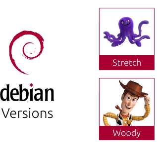
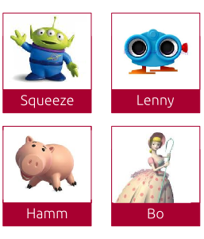
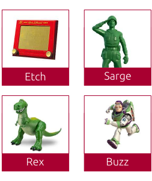

Versiones de Debian
Debian ha evolucionado desde su inicio en 1993, cuando carecía de un sistema avanzado de gestión de
paquetes, hasta convertirse en una de las distribuciones más respetadas del software libre. Desde las
primeras versiones que introdujeron herramientas fundamentales como dpkg y apt, Debian ha mejorado
continuamente su manejo de paquetes y su colaboración entre desarrolladores. Con cada lanzamiento,
se han incorporado nuevas características, como el soporte para múltiples arquitecturas y mejoras en
la seguridad. La transición a systemd como sistema de inicio predeterminado en Debian 8.0 Jessie y la
activación de AppArmor en Debian 10.0 Buster son ejemplos de su enfoque en la seguridad y la estabilidad
del sistema.
La versión más reciente, Debian 12.0 Bookworm, ha añadido soporte para non-free-firmware, facilitando la
instalación en hardware moderno y mejorando la compatibilidad general. Con un compromiso continuo hacia la
innovación y la inclusión, Debian también se ha esforzado por hacer su sistema más accesible a una variedad
de usuarios. En 2024, Debian 13.0 Trixie se encuentra en fase de prueba, enfocándose en la mejora de la
seguridad y el rendimiento, lo que subraya la dedicación del proyecto a mantener su relevancia en un mundo
tecnológico en constante cambio.
Debian nombra sus versiones con personajes de "Toy Story" para reflejar un enfoque amigable y accesible.
Esta elección añade un toque lúdico y memorable al proyecto, destacando
su compromiso con la comunidad y haciendo la tecnología más atractiva para usuarios y desarrolladores por igual.



Debian 12.0
La versión Debian 12 "Bookworm", lanzada el 10 de junio de 2023, ofrece importantes mejoras para usuarios,
desarrolladores y empresas, con un soporte garantizado de 5 años gracias a los equipos de
seguridad y soporte a largo plazo de Debian. Entre sus novedades destacan una nueva área separada para
firmware no libre, que mejora la transparencia en el manejo de controladores propietarios, compatibilidad
con nueve arquitecturas, y un total de 64,419 paquetes disponibles, junto con 11,089 paquetes nuevos y 43,254
actualizados.
Además, Debian 12 incluye software actualizado como el Kernel Linux 6.1, LibreOffice 7.4 y Python 3.11.2.
La actualización del kernel permite un mejor soporte de hardware, mejorando la estabilidad y rendimiento general
del sistema operativo. Esta nueva versión de LibreOffice trae mejoras en la interfaz y nuevas funcionalidades que
optimizan la experiencia del usuario al trabajar con documentos.
Otra de las características destacadas es el soporte para Secure Boot en ARM64, lo que brinda mayor seguridad
al garantizar que solo se ejecute software confiable durante el arranque del sistema. Esta función es especialmente
relevante para entornos empresariales donde la seguridad es una prioridad.
Debian 12 también introduce mejoras en el instalador, facilitando la instalación del sistema operativo en una
variedad más amplia de hardware. Los usuarios podrán habilitar firmware no libre durante la instalación, lo que
mejora la compatibilidad con dispositivos que requieren controladores propietarios.
La inclusión de imágenes de instalación en la nube para plataformas como Amazon EC2 y Microsoft Azure es un gran
avance para los desarrolladores y administradores de sistemas que buscan desplegar Debian en entornos de nube. Esto
simplifica el proceso de implementación y permite una integración más fluida con servicios en la nube.
Debian 12 mejora su enfoque en la accesibilidad, garantizando que más usuarios, incluidas personas con
discapacidades, puedan acceder y utilizar el sistema operativo de manera efectiva. Se han implementado mejoras en las
herramientas de accesibilidad, haciendo que Debian sea más inclusivo.
Mas información sobre versiones de Debian
Todo sobre DEBIAN 12.0